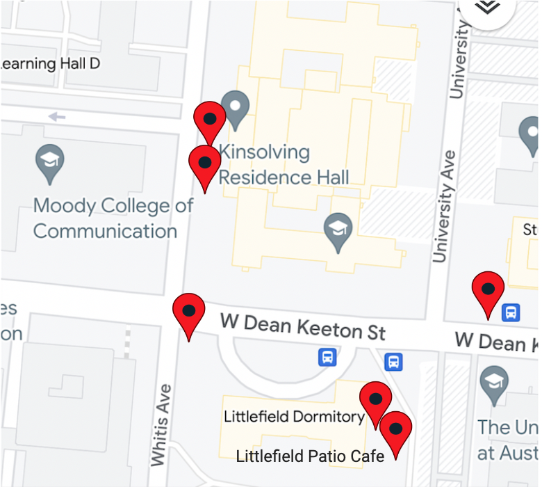

Come back and visit us here or find a QR-code on any of these
trashcan locations to help place your waste in the right trash can and help UT be a sustainable, zero-waste
campus.

We would love your thoughts! Please click here to provide your
feedback on this website or UT's zero waste initiative.